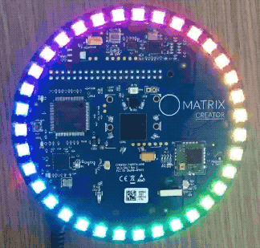

Introduction
Programs created with MATRIX HAL allow you to directly access sensors and components on the MATRIX device through C++. This guide will show you how to create and run an LED demo in MATRIX HAL. The final result being a rainbow LED sequence.
Creating A Program
Making Your Project Directory
Use the following commands to create a folder to hold your MATRIX HAL projects, in the home directory ~/ of your MATRIX device.
cd ~/
mkdir matrix-hal-project
cd matrix-hal-project
Create a file called app.cpp in your project folder, and paste the code below.
The following code turns the Everloop rainbow for 10 seconds.
/*
* Everloop rainbow example
*/
/////////////////////////
// INCLUDE STATEMENTS //
///////////////////////
// System calls
#include <unistd.h>
// Input/output streams and functions
#include <iostream>
// Included for sin() function.
#include <cmath>
// Interfaces with Everloop
#include "matrix_hal/everloop.h"
// Holds data for Everloop
#include "matrix_hal/everloop_image.h"
// Communicates with MATRIX device
#include "matrix_hal/matrixio_bus.h"
int main() {
////////////////////
// INITIAL SETUP //
//////////////////
// Create MatrixIOBus object for hardware communication
matrix_hal::MatrixIOBus bus;
// Initialize bus and exit program if error occurs
if (!bus.Init()) return false;
/////////////////
// MAIN SETUP //
///////////////
// Holds the number of LEDs on MATRIX device
int ledCount = bus.MatrixLeds();
// Create EverloopImage object, with size of ledCount
matrix_hal::EverloopImage everloop_image(ledCount);
// Create Everloop object
matrix_hal::Everloop everloop;
// Set everloop to use MatrixIOBus bus
everloop.Setup(&bus);
// Variables used for sine wave rainbow logic
float counter = 0;
const float freq = 0.375;
// 10 sec loop for rainbow effect 250*40000 microsec = 10 sec
for (int i = 0; i <= 250; i++) {
// For each led in everloop_image.leds, set led value
for (matrix_hal::LedValue &led : everloop_image.leds) {
// Sine waves 120 degrees out of phase for rainbow
led.red =
(std::sin(freq * counter + (M_PI / 180 * 240)) * 155 + 100) / 10;
led.green =
(std::sin(freq * counter + (M_PI / 180 * 120)) * 155 + 100) / 10;
led.blue = (std::sin(freq * counter + 0) * 155 + 100) / 10;
// If MATRIX Creator, increment by 0.51
if (ledCount == 35) {
counter = counter + 0.51;
}
// If MATRIX Voice, increment by 1.01
if (ledCount == 18) {
counter = counter + 1.01;
}
}
// Updates the LEDs
everloop.Write(&everloop_image);
// If i is 0 (first run)
if (i == 0) {
// Output everloop status to console
std::cout << "Everloop set to rainbow for 10 seconds." << std::endl;
}
// If i is cleanly divisible by 25
if ((i % 25) == 0) {
std::cout << "Time remaining (s) : " << 10 - (i / 25) << std::endl;
}
// Sleep for 40000 microseconds
usleep(40000);
}
// Updates the Everloop on the MATRIX device
everloop.Write(&everloop_image);
// For each led in everloop_image.leds, set led value to 0
for (matrix_hal::LedValue &led : everloop_image.leds) {
// Turn off Everloop
led.red = 0;
led.green = 0;
led.blue = 0;
led.white = 0;
}
// Updates the Everloop on the MATRIX device
everloop.Write(&everloop_image);
return 0;
}
Compiling your Program
The command below will use g++ to link the libmatrix_creator_hal.so library file when compiling your program.
g++ -o app app.cpp -std=c++11 -lmatrix_creator_hal
Running your Program
Run the following command to start the demo program.
cd ~/matrix-hal-project
./app
Result

Next Steps
Now that everything is properly installed, view our function references to see what you can do with MATRIX HAL, or view the code examples.